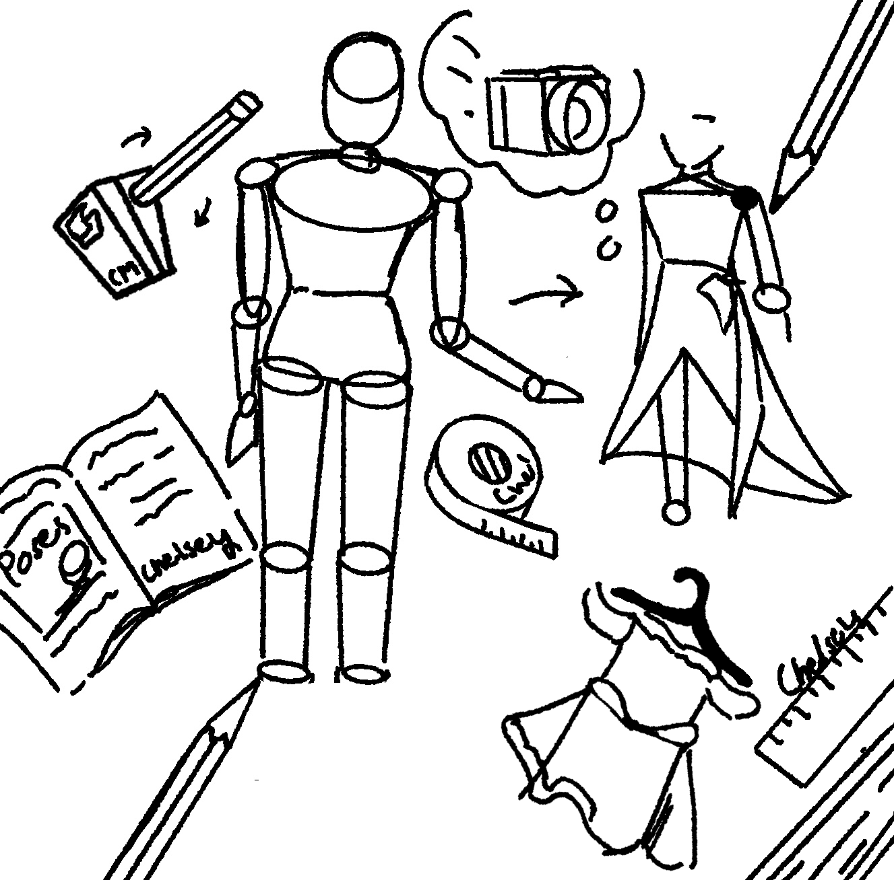

Visual Art
Invisible Symptoms · May 2026
Dresses I Couldn't Really Try

Chelsey Miguel
Founder & Editor, Episodic

There's a small little part in me that loves drawing dresses.
I think a dress conveys an architecture nobody else can see. The way a hem falls, the weight implied by a gathered skirt, the tension in a seam that hasn't been sewn. These are decisions a body makes before a hand ever picks up a needle. And I've always found that fascinating.
There were dresses I couldn't really try. Not because they weren't mine to wear, but because the trying felt impossible on certain days. The body has its own language, and chronic illness writes some of those sentences without asking. So I drew instead. And drawing became its own kind of trying.
How did this make you feel?